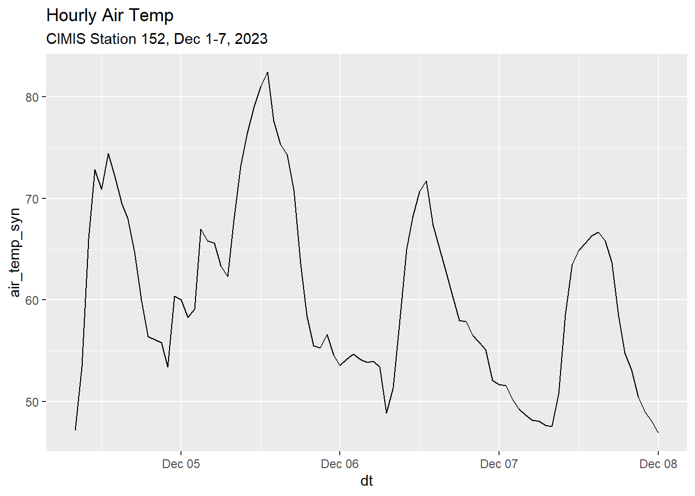
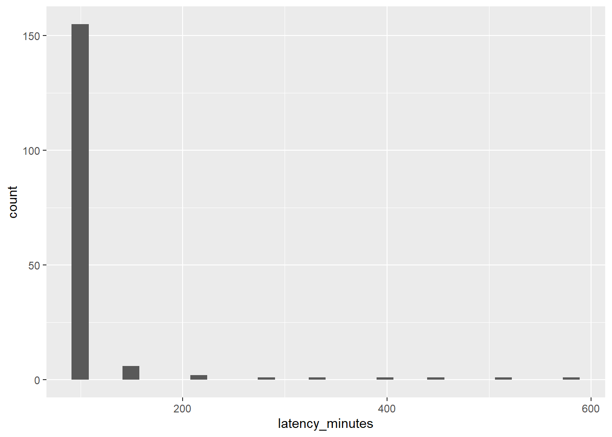

Importing CIMIS Data into R Using the Synoptic API
Andy Lyons ![]()
IGIS Tech Notes describe workflows and techniques for using geospatial science and technologies in research and extension. They are works in progress, and we welcome feedback and comments.
Summary
Synoptic hosts weather station data from 100s of networks around the US and globally, including the CIMIS network of agricultural weather stations in California. This Tech Note demonstrates how to import CIMIS weather station data into R via the Synoptic API using the httr2 package. The Synoptic API is more stable than the CIMIS API, and the latency period (how long it takes for a measurement to be available on Synoptic) is pretty good (< 2 hours for the station we look at). However not all fields from CIMIS are republished on Synoptic, so it may or may not be appropriate for all use-cases.
Introduction
The CIMIS API often works well, but in the past few years has experienced reliability issues due to its high demand and older architecture 1. Consequently, the API occasionally takes forever to reply, returns an error, or doesn’t return anything at all. The timeout errors usually go away within a few minutes, but they can be hard to predict. This makes it problematic to depend on the CIMIS API for a live decision support tool, such as an Irrigation Calculator.
The Synoptic API can be used as an alternative source for CIMIS station data. Synoptic is a third-party aggregator of weather data. The company and the platform are well-established, publish a well-documented, modern API, and offer a pretty generous free tier for academics.
Accessing the Synoptic API
To access the Synoptic API, you first need to create an account. For non-commercial usage, you can sign up for the Open Access program. You will also need to generate a public token (which is like a limited scope password) to use in your script.
Unfortunately there is not yet an R package for the Synoptic API (unlike some other weather data services, including CIMIS2). Therefore we have to construct our own API requests using a specialized package like httr2, and parse the response with help from packages from the tidyverse.
We start by loading some packages. We also define a utility function which you won’t need in your code but is used below to mask out the token in URLs.
Map Available Weather Stations
You can find weather stations available thru Synoptic using the Synoptic Data Viewer. But here, we’ll use the Metadata endpoint to map all the weather stations Synoptic hosts (not just CIMIS) within a geographic area.
Step 1 is to import a public token into R. It’s generally not a good idea to include passwords or tokens in your code (and definitely not in a Tech Note!). Below, we import one which has been saved on the first line of a text file:
my_public_token <- readLines("~/My Keys/synoptic-api.txt", n = 1)To find stations, we’ll use the Metadata API. Below we construct a query for all available stations in Ventura County, CA:
ventura_stations_metadata_url <- paste0(
"https://api.synopticdata.com/v2/stations/metadata?",
"&token=", my_public_token,
"&complete=1",
"&state=CA",
"&county=Ventura")
## View URL (with the token masked out)
ventura_stations_metadata_url |> mask_my_token()[1] "https://api.synopticdata.com/v2/stations/metadata?&token=**********&complete=1&state=CA&county=Ventura"A great way to learn how to construct a URL for the Synoptic API (including all the optional query parameters) is to use the Synoptic Query Builder.
Next, create a request object based on this URL:
ventura_stations_metadata_req <- request(ventura_stations_metadata_url)We don’t need to add any headers (if we did, we could modify the request object using various req_*() functions), so we can just send it:
ventura_stations_metadata_resp <- req_perform(ventura_stations_metadata_req)From here we can extract the body of the response as a list:
venstn_lst <- resp_body_json(ventura_stations_metadata_resp)A good way to explore the structure of a big list object is to open it in the View pane in RStudio. Click on the Preview button next to the list in the environment pane, or use the View() function.
Now we can drill down into the stations:
## Number of stations found:
venstn_lst$SUMMARY$NUMBER_OF_OBJECTS[1] 551View the metadata for the first station:
venstn_lst$STATION[[1]] |> str()List of 24
$ ID : chr "134"
$ STID : chr "KCMA"
$ NAME : chr "Camarillo, Camarillo Airport"
$ ELEVATION : chr "75.0"
$ LATITUDE : chr "34.21667"
$ LONGITUDE : chr "-119.08333"
$ STATUS : chr "ACTIVE"
$ MNET_ID : chr "1"
$ STATE : chr "CA"
$ TIMEZONE : chr "America/Los_Angeles"
$ ELEV_DEM : chr "88.6"
$ NWSZONE : chr "CA355"
$ NWSFIREZONE : chr "LOX355"
$ GACC : chr "SOCC"
$ SHORTNAME : chr "ASOS/AWOS"
$ SGID : chr "SC08"
$ COUNTY : chr "Ventura"
$ COUNTRY : chr "US"
$ WIMS_ID : NULL
$ CWA : chr "LOX"
$ PERIOD_OF_RECORD:List of 2
..$ start: chr "1999-11-14T00:00:00Z"
..$ end : chr "2024-12-03T15:25:00Z"
$ PROVIDERS :List of 1
..$ :List of 2
.. ..$ name: chr "National Weather Service"
.. ..$ url : chr "http://www.weather.gov"
$ UNITS :List of 2
..$ position : chr "m"
..$ elevation: chr "ft"
$ RESTRICTED : logi FALSENext, we use purrr::map_dfr to create a tibble of the stations that we can use in a map:
venstn_loc_tbl <- map_dfr(
venstn_lst$STATION,
`[`,
c("STID", "NAME", "LONGITUDE", "LATITUDE", "STATUS", "MNET_ID")
)
venstn_period_tbl <- map_dfr(
venstn_lst$STATION,
function(x) data.frame(DATA_START = ifelse(is.null(x[["PERIOD_OF_RECORD"]][["start"]]), NA, x[["PERIOD_OF_RECORD"]][["start"]]) ,
DATA_END = ifelse(is.null(x[["PERIOD_OF_RECORD"]][["end"]]), NA, x[["PERIOD_OF_RECORD"]][["end"]]))) |>
mutate(DATA_START = str_sub(DATA_START, start = 1, end = 10),
DATA_END = str_sub(DATA_END, start = 1, end = 10))
venstn_tbl <- bind_cols(venstn_loc_tbl, venstn_period_tbl)
head(venstn_tbl)The station metadata includes the network ID (MNET_ID), but not the name of the network (i.e., ‘CIMIS’). So we need to get the Networks table so we can add that to our map:
networks_lst <- paste0("https://api.synopticdata.com/v2/networks?&token=",
my_public_token) |>
request() |>
req_perform() |>
resp_body_json()
networks_tbl <- networks_lst$MNET |>
map_dfr(`[`, c("ID", "SHORTNAME", "LONGNAME", "URL",
"CATEGORY", "LAST_OBSERVATION", "ACTIVE_STATIONS")) |>
rename(MNET_ID = ID,
network_short = SHORTNAME,
network_long = LONGNAME)
networks_tbl |> head()Make a leaflet map
We now have everything we need to make a leaflet map. The first step is to make a sf object for the stations.
Linking to GEOS 3.12.1, GDAL 3.8.4, PROJ 9.3.1; sf_use_s2() is TRUE## Create a sf object
venstn_sf <- venstn_tbl |>
st_as_sf(coords = c("LONGITUDE", "LATITUDE"), crs = 4326) |>
left_join(networks_tbl, by = "MNET_ID")
head(venstn_sf)Now we can make the leaflet map:
library(leaflet)
## Create the leaflet object
m <- leaflet(venstn_sf) |>
addCircleMarkers(radius = 5,
fillColor = ~ifelse(STATUS == "ACTIVE", "#0000ff", "#333"),
stroke = FALSE,
fillOpacity = 0.6,
popup = ~paste0("<h3>", NAME, "</h3>",
"<p>Status: ", STATUS, "<br/>",
"Network: ", network_short, " (",
network_long, ")<br/>",
"Latest observation: ", DATA_END, "<br/>",
"Station ID (Synoptic): <tt>", STID, "</tt></p>")) |>
addTiles()
mExploring the Data from One Station
To explore the data available from Synoptic, we’ll import time series data from CIMIS Station #152 (Camarillo) via the Synoptic API.
Synoptic hosts data from thousands of weather stations across the USA, and each one has a unique ID. To query station data, you need to know the Synoptic Station ID (STID). The easiest way to find the SDID for a station is thru the Synoptic Data Viewer. You can also find a station ID via the API by downloading metadata for all the stations in a network and then search by name (not shown here). The Station ID for CIMIS station #152 is CI152.
To see the availability of data on Synoptic for a specific station, you can use the data availability tool (requires a Synoptic account): https://availability.synopticdata.com/stations/.
As of this writing, the latest availability of this station is 1/8/24 (>2 weeks ago). To check the availability of CIMIS data in general, we can check the availability of the CIMIS network (CIMIS Network ID = 66).
https://availability.synopticdata.com/networks/#66
This reveals that as of this writing there have been no data from the CIMIS network have been ingested since for over 2 weeks (in other words, it’s not just this station).
Timeseries Endpoint
The Synoptic API only serves CIMIS data at its finest temporal resolution (i.e., hourly). If you want daily, weekly, or monthly summaries, you’ll hve to compute the temporal aggregations yourself (not hard, see below).
The time series documentation tells us that we have to pass the date-time values for the start and end arguments in UTC, which for California in December is 8 hours ahead of local time.
Following the documentation for the timeseries endpoint, we’ll construct a URL to retrieve hourly data for one week in December 2023:
# Time Series for a single station (CI152), date range, four variables (only), English units, local time
start_dt_utc_chr <- "202312010800"
end_dt_utc_chr <- "202312080800"
ci152_url <- paste0("https://api.synopticdata.com/v2/stations/timeseries?token=",
my_public_token,
"&stid=CI152", ## CIMIS Station #152
"&vars=air_temp,evapotranspiration,precip_accum_one_hour,soil_temp",
"&varsoperator=and", ## get all variables
"&units=english", ## imperial units
"&start=", start_dt_utc_chr, ## UTC time (+8)
"&end=", end_dt_utc_chr, ## UTC time (+8)
"&obtimezone=local") ## send back timestamps in local time
## View URL (with the token masked out)
ci152_url |> mask_my_token()[1] "https://api.synopticdata.com/v2/stations/timeseries?token=**********&stid=CI152&vars=air_temp,evapotranspiration,precip_accum_one_hour,soil_temp&varsoperator=and&units=english&start=202312010800&end=202312080800&obtimezone=local"Send the request:
ci152_resp <- ci152_url |>
request() |>
req_perform()
ci152_resp |> resp_status_desc()[1] "OK"Convert the response body to a list:
ci152_data_lst <- resp_body_json(ci152_resp)As with many APIs, the Synoptic timeseries endpoint returns a deeply nested list that needs to be converted to a data frame. The general term for converting lists to data frames is rectangling. There are many strategies and techniques you can use to rectangle data. For a longer discussion including tidyverse methods, see the Reactangling vignette from tiydr.
The code below that rectangles the API response from Synoptic is not intended to be the most elegant. Rather it seeks to break down the logic for learning purposes, and highlight the structure of the nested list.
View some properties:
## How many objects (we expect 1 - CIMIS Station 152)
ci152_data_lst$SUMMARY$NUMBER_OF_OBJECTS[1] 1## View the first station ID and name
ci152_data_lst$STATION[[1]]$STID[1] "CI152"ci152_data_lst$STATION[[1]]$NAME[1] "Camarillo"## View the period of record for this station (not the data)
ci152_data_lst$STATION[[1]]$PERIOD_OF_RECORD$start[1] "2003-10-17T00:00:00Z"ci152_data_lst$STATION[[1]]$PERIOD_OF_RECORD$end[1] "2024-12-03T09:00:00Z"## View the time zone of these data
(ci152_data_tz <- ci152_data_lst$STATION[[1]]$TIMEZONE)[1] "America/Los_Angeles"## View the air temp units
ci152_data_lst$UNITS$air_temp[1] "Fahrenheit"To convert the list to a data frame, we first extract the variables we want as individual vectors:
## Get the date times for the time series
ci152_data_datetime_chr <- ci152_data_lst$STATION[[1]]$OBSERVATIONS$date_time |> unlist()
## Explore the format
ci152_data_datetime_chr[1:2][1] "2023-12-04T08:00:00-0800" "2023-12-04T09:00:00-0800"## Convert to a POSIXct object, in the local timezone
ci152_data_datetime_chr[1:2] |> ymd_hms(tz = ci152_data_tz)Date in ISO8601 format; converting timezone from UTC to "America/Los_Angeles".[1] "2023-12-04 08:00:00 PST" "2023-12-04 09:00:00 PST"Create a vector of time stamps:
ci152_data_dt <- ci152_data_datetime_chr |>
ymd_hms(tz = ci152_data_tz)Date in ISO8601 format; converting timezone from UTC to "America/Los_Angeles".Create a vector of air temp values:
ci152_data_airtemp <- ci152_data_lst$STATION[[1]]$OBSERVATIONS$air_temp_set_1 |> unlist()
glimpse(ci152_data_airtemp) num [1:89] 47.2 53.4 66 72.8 70.9 74.4 72.1 69.5 68 64.7 ...Create a vector of precipitation values:
ci152_data_precip_accum <- ci152_data_lst$STATION[[1]]$OBSERVATIONS$precip_accum_one_hour_set_1 |> unlist()
glimpse(ci152_data_precip_accum) num [1:89] 0 0 0 0 0 0 0 0 0 0 ...Create a vector of ET values:
ci152_data_et <- ci152_data_lst$STATION[[1]]$OBSERVATIONS$evapotranspiration_set_1 |> unlist()
glimpse(ci152_data_et) num [1:89] 0 0 0.01 0.01 0.01 0.01 0.01 0.01 0 0 ...Create a vector of ET values:
ci152_data_stemp <- ci152_data_lst$STATION[[1]]$OBSERVATIONS$soil_temp_set_1 |> unlist()
glimpse(ci152_data_stemp) num [1:89] 47.8 47.7 48.4 50.3 52.9 55.3 57.4 58.7 59.5 59.2 ...Put them all together in a tibble:
## Compute a tibble with the hourly values
ci152_data_tbl <- tibble(dt = ci152_data_dt,
date = date(ci152_data_dt),
air_temp_syn = ci152_data_airtemp,
precip_syn = ci152_data_precip_accum,
et_syn = ci152_data_et,
soil_temp_syn = ci152_data_stemp)
head(ci152_data_tbl)ggplot(ci152_data_tbl, aes(x=dt, y=air_temp_syn)) +
geom_line() +
ggtitle("Hourly Air Temp",
subtitle = "CIMIS Station 152, Dec 1-7, 2023")
Weather data can be a little tricky to work with, because it isn’t always obvious what the columns represent. R doesn’t have a native way to store metadata in data frames, but there are some standard methods you can use to help you remember what each column contains.
1. Use good column names that include units
An quick and easy method is simply to use meaningful column names that tell you more about the data. For example, units can be added as a suffix, as in precip_in vs precip_mm.
2. Save columns as units objects
The units package comes with a database of hundreds of standard units. You can convert numeric columns in a data frame to units objects that inherently encode the units as part of the data.
For example, to record the units of the tmin column as Fahrenheit:
df <- ci152_data_tbl
df$air_temp_syn <- units::set_units(ci152_data_tbl$air_temp_syn, "degF")
df$air_temp_syn |> head()Units: [degF]
[1] 47.2 53.4 66.0 72.8 70.9 74.4An advantage of this technique is you can use other functions from units to convert the values to another standard unit (e.g., from Celsius to Fahrenheit), without having to look up conversion constants. For example to see the temperature values as Celsius:
Units: [°C]
[1] 8.444444 11.888889 18.888889 22.666667 21.611111 23.555556Note however that some functions that you use for analysis may freak out when they encounter a units object. In these cases, you can usually convert it back to a plain vanilla number with as.numeric().
3. Use a metadata package
There are a handful of packages and techniques that use attributes to annotate columns in a data frame. For an overview, see this StackOverflow thread.
Check the Latency of the Data
The Latency end point tells us how long it takes for a measurement on the weather station to be available in Synoptic.
First, construct a URL for the Latency endpoint as described in the docs:
latency_url <- paste0("https://api.synopticdata.com/v2/stations/latency?token=",
my_public_token,
"&stid=CI152",
"&start=", start_dt_utc_chr,
"&end=", end_dt_utc_chr,
"&stats=mean")
## View URL (with the token masked out)
latency_url |> mask_my_token()[1] "https://api.synopticdata.com/v2/stations/latency?token=**********&stid=CI152&start=202312010800&end=202312080800&stats=mean"Next, create the request object, perform the request, and parse the results into a list:
latency_lst <- latency_url |>
request() |>
req_perform() |>
resp_body_json()Pull out the latency values for this time period into a tibble:
ci152_latency_tbl <- tibble(
dt = ymd_hms(latency_lst$STATION[[1]]$LATENCY$date_time, tz = ci152_data_tz),
latency_minutes = latency_lst$STATION[[1]]$LATENCY$values |> unlist()
)Date in ISO8601 format; converting timezone from UTC to "America/Los_Angeles".ggplot(ci152_latency_tbl, aes(x=latency_minutes)) +
geom_histogram()`stat_bin()` using `bins = 30`. Pick better value with `binwidth`.
Compute the mean and median:
median(ci152_latency_tbl$latency_minutes)[1] 95mean(ci152_latency_tbl$latency_minutes)[1] 110.3964This shows that the vast majority of measurements from this CIMIS station were available in Synoptic within 95 minutes of being recorded.
Download the Same Data Using the CIMIS API
To verify that Synoptic indeed publishes an identical copy of the data, we can download the same data from the CIMIS API.
First, we load cimir and a key for the CIMIS API:
Set your CIMIS App Key with "set_key()".Next, we get the same set of variables for Station #152, for the same time period as above, using cimir::cimis_data(). This function allows us to import either hourly or daily data.
camrillo_hly_lng_fn <- "synoptic-cimis_camrillo_hly_lng.Rds"
## If I already downloaded the data, load the cached copy
if (file.exists(camrillo_hly_lng_fn)) {
camrillo_hly_lng_tbl <- readRDS(camrillo_hly_lng_fn)
} else {
### Query CIMIS data (Camrillo)
camrillo_hly_lng_tbl <- cimis_data(targets = 152,
start.date = "2023-12-01",
end.date = "2023-12-07",
measure.unit = "E",
items = "hly-air-tmp,hly-eto,hly-asce-eto,hly-precip,hly-soil-tmp")
saveRDS(camrillo_hly_lng_tbl, camrillo_hly_lng_fn)
}
dim(camrillo_hly_lng_tbl)[1] 840 14camrillo_hly_lng_tbl |> head()Next, we do a little data wrangling to put the data from the CIMIS API in the same tabular format as the Synoptic data so we can compare them. This includes:
- concatenating the date and time fields into a POSIXct column
- pivoting from long to wide
- renaming columns to match the Synoptic data frame
camrillo_hly_wide_tbl <- camrillo_hly_lng_tbl |>
mutate(dt = make_datetime(
year = as.numeric(str_sub(Date, 1, 4)),
month = as.numeric(str_sub(Date, 6, 7)),
day = as.numeric(str_sub(Date, 9, 10)),
hour = as.numeric(str_sub(Hour, 1, 2)),
min = as.numeric(str_sub(Hour, 3, 4)),
sec = 0,
tz = "America/Los_Angeles"
)) |>
select(Date, Hour, dt, Item, Value) |>
pivot_wider(id_cols = c(Date, Hour, dt), names_from = Item, values_from = Value) |>
rename(air_temp_cim = HlyAirTmp,
precip_cim = HlyPrecip,
et_cim = HlyEto,
soil_temp_cim = HlySoilTmp)
camrillo_hly_wide_tbl |> head()Compare Data from Synoptic and CIMIS
The data from Synoptic and CIMIS should be identical. To verify this, we’ll put them in the same tibble.
cam_syncimis_comb_tbl <- ci152_data_tbl |>
left_join(camrillo_hly_wide_tbl, by = "dt") |>
select(dt, date, air_temp_syn, air_temp_cim, soil_temp_syn, soil_temp_cim, precip_syn, precip_cim,
et_syn, et_cim, HlyAsceEto)
cam_syncimis_comb_tbl |> head()Compare all rows:
cam_syncimis_comb_tblAs expected, we don’t see any difference between the hourly data from CIMIS and Synoptic.
Compute Daily Summaries
The Synoptic Timeseries endpoint returns hourly data for the CIMIS network (matching the temporal resolution of the CIMIS API). Many use-cases however require daily summaries (e.g. computing degree days). Fortunately, we can compute these fairly easily with dplyr.
To compute daily summaries, you have to select an aggregation function that will take 24 individual hourly values and spit out a single number. The usual suspects include min(), max(), mean(), median() and sum().
The appropriate aggregation function will depend on the variable you’re aggregating, and what you plan to do with it. For example, hourly precipitation represents the accumulation for just that hour. For most use cases involving crop management, you’d want to sum those up to get the total daily accumulation. On the other hand, you were evaluating stormwater runoff, you might be more interested in the maximum hourly precipitation. Likewise with Eto, you probably want the sum (because cumulative Eto predicts water requirements). Temperature driven crop and pest development models are more likely to require that maximum and minimum daily air temperature.
In other words, you have do your homework. There is no one-size-fits-all aggregation function or method when it comes to resampling weather data.
ci152_daily_tbl <- ci152_data_tbl |>
group_by(date) |>
summarise(tmin = min(air_temp_syn),
tmax = max(air_temp_syn),
pr = sum(precip_syn),
.groups = "drop")
ci152_daily_tblIn addition to hourly data, CIMIS publishes daily summaries via both their API and SFTP server. However you may be surprised to discover that your daily minimums and maximums don’t exactly match the daily summaries from CIMIS. What gives?
The answer appears to lie in how CIMIS computes daily summaries. The short version is that CIMIS seems to define a “day” as starting from 1:00 am and continuing thru mid-night of the following day. In other words, CIMIS takes 12:00 am to be the final, rather than the first, measurement of the day. This is based on a ‘reverse engineering’ exercise, rather than an authoritative response from a data engineer in the CIMIS network, so if you have additional info please leave a comment!
Conclusion
CIMIS is an important network of agricultural weather stations in CA, supported by CA DWR. The public API however is currently over-subscribed and unstable, making programmatic access to the API more of a challenge. Fortunately, Synoptic republishes CIMIS data, along with hundreds of other weather stations networks, and has a modern API. Using functions from httr2 and tidyverse packages, you can download CIMIS data directly into R in near realtime.
![]()